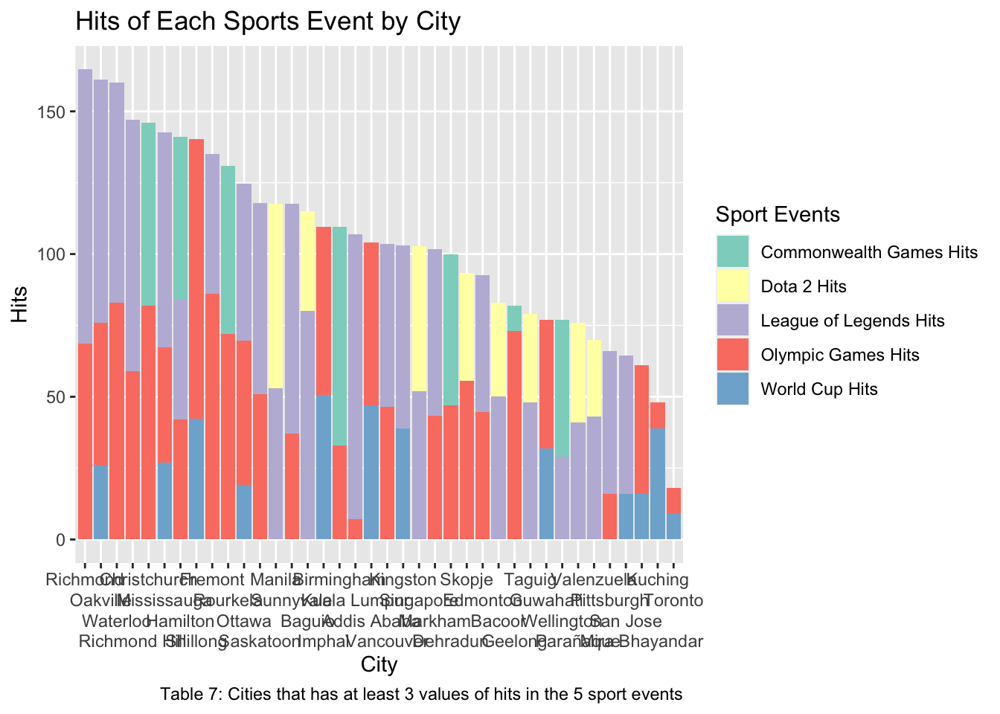
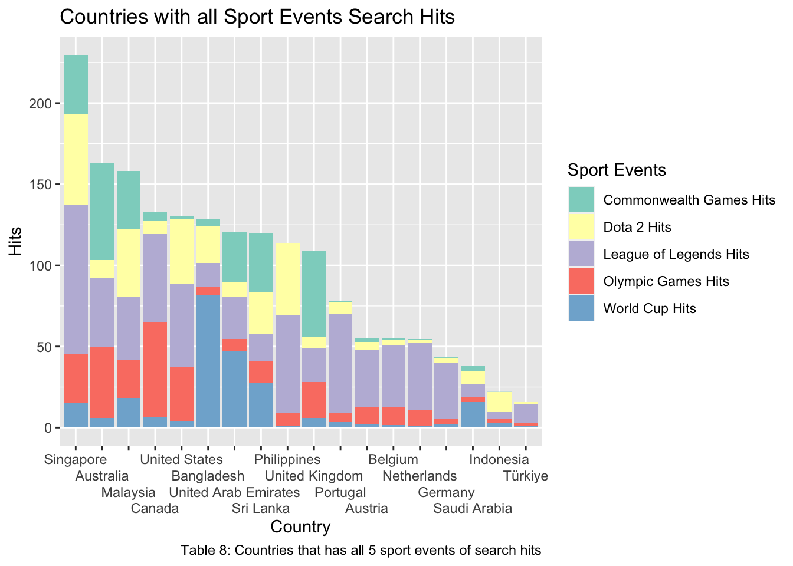
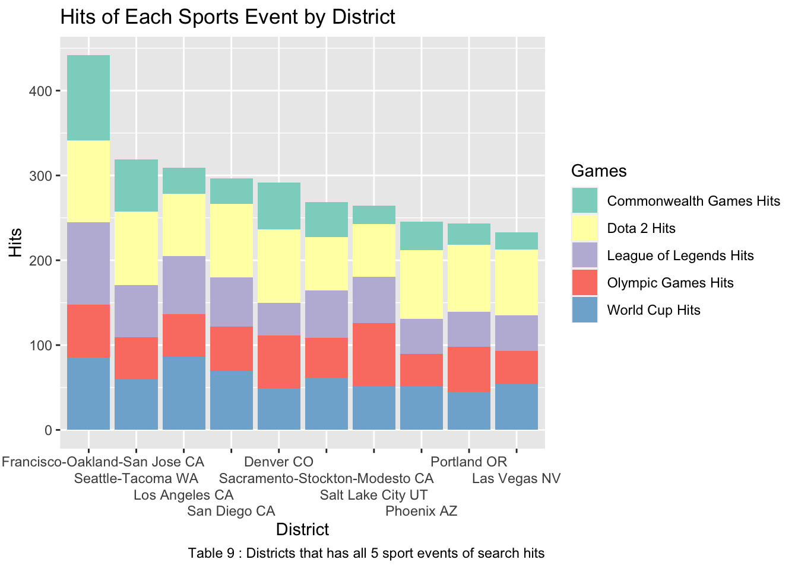
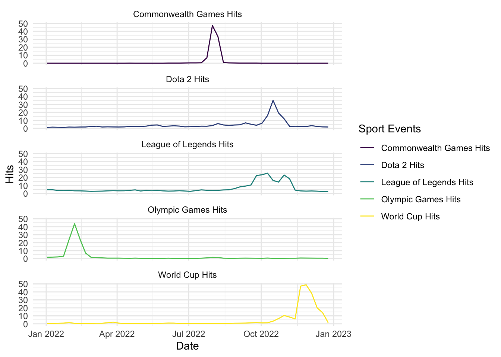

Midterm Project
Wise Chua
2023-03-01
Search Trends in 2022 on Sports Event
Introduction
Every year, sports events are one of the most important activities that people from all around the world are interested in. Major sport events are extremely competitive as this is the time for athletes to demonstrate their skills, determination, and performance in the sports. Moreover, people usually interact with some kinds of sport throughout their childhood life and during school activities. This will develop their interest and hobbies in different kinds of sports. It is also important for a person to do some form of sports to maintain health and wellness such as running, playing basketball and soccer.
Due to the impact in COVID-19, most events that were originally held in 2020 and 2021 were postponed as travel restrictions were in place and athletes’ health safety. Some of the several major athletic events postponed in these two years were Tokyo 2020 Summer Olympic and Paralympic Games, UEFA Euro 2020, 2021 Southeast Asian Games, and COPA America 2020. With social distancing measures lifted and travel restrictions lifted, most sports events had resumed in 2022.
In recent years, the popularity surge in esports had become a different kind of sport due to the highly competitive events and increased popularity of video gaming due to advancement in technology, it had become a new kind of sport. In 2018, esports had been recognized as a sports event in the 2018 Indonesia Asian Games. Moreover, the Olympic Committee is going to hold an Olympic Esports Series in 2023 for supporting the development of esports in the past few years and possibly becoming an official sport event in the Olympic Games.
With the increase usage in technologies due to COVID-19 as people are required to stay at home during the lockdown period, people started to gain real time information through search engines, online newspapers and social media platforms. In particular, sport and esport events have become more popular and well known over these years due to technological advancement such as live time information on these activities can be delivered worldwide efficiently.
Google search engine is one of the most widely used search engines for academically, general purpose and any information that people want to know. One of the reasons that Google has become so powerful and highly popular is due to their strong search algorithms which can provide information that users would need to find immediately. Moreover, Google also provides different services such as image search, news information, and live time map information which are extremely useful designs for people to use in daily life.
For this research, we would want to find the different searching trends for sports and esports events that happened in 2022. The dataset will be generated by using the Google Trends R package which can provide a scaled range from 0 to 100 based on a topic’s proportion to all searches on all topics (By Google Documentation) that people had searched on Google Search Engine. In each generated trends queries, it also provides the proportion searches in each region, countries and related queries to the given keywords.
Thus, the research question for this assignment is to compare the different searching trends on Google Search Engine between 5 sports events. In particular, we will be focusing on 3 sports (2022 Beijing Winter Olympic Games, 2022 Qatar FIFA World Cup, and 2022 Birmingham Commonwealth Games) with 2 esports (League of Legends World Championship and The International Dota 2 Championship) that occurred in 2022. This project will be mainly focusing on the number of search queries over a time period and whether we can find any patterns between different events.
Methods
Data Collection
The data for this research project is acquired through the gtrends function from the gtrendsR package in R. This function can find the number of a keyword proportion to all searches on all topics at the same time. It can also provide the proportion of the searches on each keyword with each country and cities over the specified time period. It will also provide similar keywords to the searched keywords for number of hits. Due to the limitation of the function, it can at most take in 5 keywords each time which means it will generate a different data set. Hence, several keywords will need to be formed with different function calls and we will need to store them as different variables. For each event, we will use 5 keywords that can represent the sport event and use the other top 10 related queries from the results of the keywords.
Since we are comparing over 5 different major sports events, the data set will be combined together after extracting the information from the results of the function call. As our main research question is comparing these sports events within 2022, we will limit our searches to only search queries data that occurred in 2022. We will generate with date restrictions to our search trends for the whole 2022 year (2022-01-01 to 2022-12-31). Note that in each result of the function call, it will have 4 data frames in total where each of them are search hit over time, country, city and major district worldwide.
The table below shows the keywords that we used for each sport events. It has the initial 5 keywords that we started with and the remaining 10 keywords based on the related queries.
| 2022 Qatar World Cup 5 Search Keywords | world cup 2022 | world cup | 2022 world cup | qatar world cup | fifa world cup |
| 2022 Qatar World Cup 10 Related Search Words | fifa | fifa world cup 2022 | fifa 2022 | 2022 world cup schedule | qatar 2022 world cup |
| world cup 2022 fixtures | world cup football 2022 | world cup 2022 live | world cup live | world cup table 2022 | |
| 2022 Beijing Olympic Games 5 Search Keywords | 2022 winter olympic | olympic games beijing 2022 | olympic games 2022 | beijing olympics 2022 | winter olympic games |
| 2022 Beijing Olympic Games 10 Related Search Words | olympics 2022 | olympics | winter games 2022 | winter olympics | olympic games |
| 2022 winter olympic games | winter olympic games 2022 | olympic medals 2022 | winter olympic medal 2022 | beijing 2022 | |
| 2022 Birmingham Commonwealth Games 5 Search Keywords | 2022 birmingham commonwealth games | 2022 birmingham commonwealth | commonwealth games | commonwealth games 2022 | 2022 commonwealth games |
| 2022 Birmingham Commonwealth Games 10 Related Search Words | birmingham commonwealth games 2022 | birmingham games | birmingham games 2022 | commonwealth games 2022 india | commonwealth games 2022 table |
| birmingham 2022 commonwealth games india | commonwealth games medal tally 2022 | commonwealth games medal tally | commonwealth games medal table | commonwealth games 2022 medals | |
| 2022 League of Legend World Championship 5 Search Keywords | 2022 league of legends world championship | 2022 league of legends | 2022 lol world championship | 2022 lol worlds | lol worlds championship |
| 2022 League of Legend World Championship 10 Related Search Words | league of legends worlds | league of legends worlds 2022 | worlds 2022 | lol world championship 2022 | league of legends world championship 2022 tickets |
| league of legends champions | league of legends world championship prize pool | league of legends world championship 2022 prize pool | league of legends world championship 2022 schedule | worlds league of legends | |
| 2022 The International Dota 2 5 Search Keywords | the international dota 2 championship | 2022 the international dota 2 championship | dota 2 championship | the international dota 2 | dota the international 2022 |
| 2022 The International Dota 2 10 Related Search Words | dota 2 world championship | dota 2 championship 2022 | dota 2 world championship 2022 | dota 2 championship prize | the international 2022 dota 2 |
| dota 2 international 2022 | the international 2022 | international dota 2 2022 | dota 2 liquipedia | the international dota 2 championship |
Data Wrangling
The data cleaning for each sport event will be relatively similar
because the generated results have fixed columns and information inside
are the same.We will first extract the interest over time
dataframe from each queries and combine them into a single dataframe.
Afterwards, we will be changing the date columns from character values
into Date by using as.Date in R. Next, we will place all
values in the hits column (which indicate the proportion of search on
the topic compared to all samples of all searches) that has
<1 into 0. This is to have all values that has less than
1% of search in the week to be considered as 0 as these are too small.
Finally, we will group the data by their dates and use the summarise
function to compute the mean of hits in each week with missing values
removed.
For the remaining 3 data frames where there are categories by
country, city, and major district worldwide, the numbers of hits column
in these data frames is not separated by weeks, as they are the highest
score that occurred during the search period (2022-01-01 to 2022-12-31).
We will group them by either their country, city and major district
depending on the data frame and compute the average of hits. We will
handle the same as previous for hits that have <1 and
remove NA values.
Notice that when using the gtrends function call, sometimes the type for the number of hits are not in integer and stored as character type. Hence, we will need to convert it to integer before merging the data from each function call.
Finally, we will sort the remaining 3 data frames by the highest search queries in their region for better demonstration of the data frame.
Below are the first six rows after data cleaning for each sports of the remaining 3 data frames:
|
|
|
|
|
|
|
|
|
|
|
|
|
|
|
Afterwards, we will merge all cities data with different sport events into one data by their city with using full join since the number of cities in each data could be different. We will also do this to the countries data and district data. With merging all 5 sports into 1 data frame, we will need to rename the columns to the games name.
Data Exploration
For data exploration, we will use barchart graph to see how the general trends goes in each sport events and compare between different sports events by different city, country and district. We will only choose locations that have all 5 data.

The barplot shows cities that have at least 3 search hits in the 5 sport events. I limited to at least 3 because most of the cities have either only have 1 or 2 search hits. We can see that most of the cities from the bar plot are considered as one of the major city in the province. We can see that World Cup and Olympic Games has very high search trends as it appears in all cities but commonwealth games does not. A very surprising result was League of Legend where it appears in most of the cities.

This barplot only shows countries that have all 5 sport events search queries. From the country search trend, we can see most of the countries have at least some search trend in the World Cup event. Some countries have relatively low search in Olympic games. For League of Legends, we can see most of the countries have very high search hits compared to Dota 2. For the Commonwealth Games, it seems that some countries have more searches in the Commonwealth compared to the Olympics but would need further investigation.

This barplot only shows districts that have all 5 sport events search query. From the search trend plot above, We can see most events have a relatively consistent search hits among all different games. One of the most surprising results was that Dota 2 hits were relatively higher than League of Legends but this trend was not found in previous barplot.
Preliminary Results
Below are the summary results for the search trends for each sports event from 2022/01/01 to 2022/12/31 worldwide.
|
|
|
|
|
From the table results above, we can see that for most of the mean are relatively low because most of the high search queries occurred during the event. We can also see that the maximum search queries for each event is approximately 40% to 50% which is not really that high. Although League of Legends has the lowest highest hits, their mean is the highest compared to others. This could mean that the search trend hits numbers were more spread out throughout 2022.
Our main question was to find whether there is any trend in the search hit of sports events during 2022.


From the graphs above, we can see that most events have a higher peak when the event is on-going. However, for the World Cup, we can see the search trend did not go down significantly compared to others and there are higher search trends before the events start compared to other events. For both Commonwealth Games and Olympic games, the search trend went down extremely fast after the event had concluded. For both the esports (Dota 2 and League of Legends), we can see there are still some slightly search queries being requested throughout the year.
Summary
In this project, we were to find the relationship of search trends in people for different sport events that occurred in 2022. Based on the line graphs and summary statistics table, we can see that the search queries increase significantly during the event and the search queries will decrease significantly. During other periods of time than the event time, there are relatively low search queries and most events will have no search queries. For the World Cup, there are more search queries even after the event compared to others. This could be because the World Cup is an event that everyone around the world will be following compared to other events that have lower popularity. For esports events, the search trend will stay fluctuating throughout the year, this could be due to event structure based on the teams performance throughout the year.
Limitations
There are several limitations in this research. There are several empty values in the city, country and district data frame as google trends does not capture all search queries in those regions. These empty values result in the data in different cities, countries, and districts being very limited as we can’t compare them very well. We limited the queries from January 2022 to December 2022, but some of the events happened at the beginning of 2022 and some events occurred during the end of 2022. This could highly affect the comparison of the queries between before and after the events. Some other limitations could be the keywords that we chose are not representative to the event.
Future Steps
My plan for the future steps is to incorporate different small events that occurred in the Games and we look deeper into those trends. Also, I would want to change the time trends and look at different timing of each Sports event based on one week before the event starts to one week after the event. Furthermore, look at other sport events that also occurred in 2022 and consider whether events that had been postponed by COVID-19 have different trends with events that were originally planned for 2022. If it is possible, I would want to try comparing with other search engines such as Yahoo or Bing on the same events to see whether there is any difference.